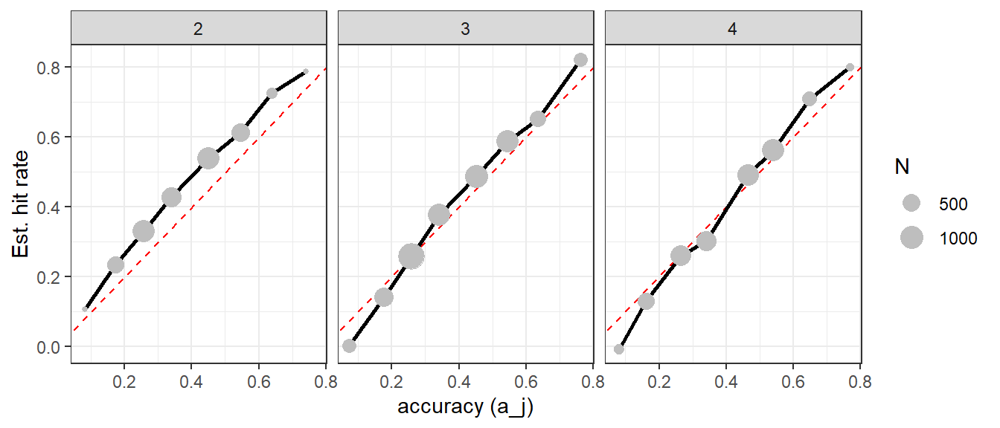
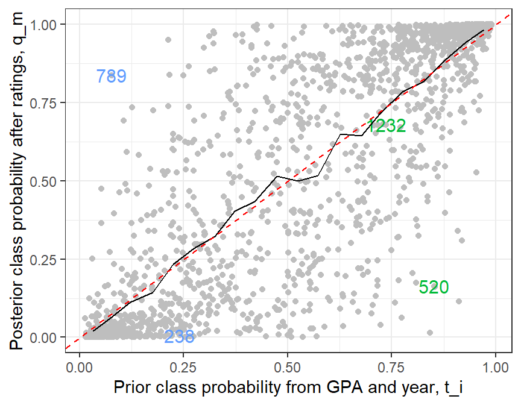

library(tidyverse)library(tapModel)library(LaplacesDemon) # for mode and rbernlibrary(knitr)library(kableExtra)library(lme4) # for the IRT-style modeldata(writing)student_index <- dasl |>group_by(occasion_id) |>summarize(subject_id =first(subject_id)) |>pull(subject_id)gpa_std <- dasl |>distinct(subject_id, .keep_all =TRUE) |>arrange(subject_id) |>pull(gpa)year_index <- dasl |>distinct(occasion_id, .keep_all =TRUE) |>arrange(occasion_id) |>mutate(year = year -2) |># map from 2,3,4 to 0,1,2pull(year)
1 Example: Writing Assessment
Colleges teach writing, and in the process, evaluate its qualities. This evaluation can become a grade, but there are research uses as well. A written work like an essay is complex, and it’s not obvious that two readers will make the same assessment. Often there’s a scoring guide that associates the perceived characteristics of a piece of writing with a number. For example, “correctness” assesses spelling, grammar, punctuation, and other aspects of standard English, often on a five-point scale. There are several journals devoted to the assessment of writing, and the research community includes writing program administrators, education researchers, linguists, and associated fields. Because of the ratings comparison question, rater agreement statistics are often used, including the kappas, weighted kappas (for ordinal scales), and IRT-type methods.
1.1 Introduction
The data set we’ll examine in this example concerns writing assessments, but it uses a non-standard approach to data generation intended to capture change over time for students. The method internally is called DASL, for Developmental Assessment of Student Learning. College instructors rate students on their writing ability after a semester of observing them, using a 0-4 scale, where zero means “not doing college level work,” and four means “writing at the level of a college graduate.” The scores are assigned holistically, not based on particular written works, unless the instructor chooses to do that. More details are found in the validity study D. Eubanks & Vanovac (2020). The data set considered here is curated from a larger sample to ensure raters and subjects each have a minimal density of ratings.
The ratings are intended to track a student’s progress through a college curriculum over four years, so if their year in school matches the rating, they are “on track.” This gives us a straightforward way to convert the ratings to binary: if the rating is greater than or equal to the year, they are on track and assigned a Class 1 rating. Otherwise they are assigned a zero for that assessment. Because of high admissions standards, virtually every student receives on-track assessments in the first year, so we’ll only consider years 2, 3, and 4.
Table 1: Rates of on-track assessments by year in college.
Year
Ratings
Subjects
Raters
On track
2
1264
505
168
82%
3
2001
710
205
51%
4
1430
510
176
38%
The rates in Table 1 suggest that the standard for success increases over the four years of college as writing assignments become more difficult. This could be seen as a calibration issue with the raters, who may be too lenient with early-career students and too severe raters with college seniors. Or perhaps the degree of challenge ramps up too quickly, and the fourth-year instructors have unrealistic expectations. Those questions are outside the scope of what we can answer with a reliability study. The main idea to take away from Table 1 is that we should anticipate calibration issues.
Because of the repeated-measures of students at different times, there is a new column in the data called occasion_id, which is a combination of subject and year. The writing assessment data is typical in that raters and subjects have varying numbers of ratings associated with them. The original (large) data set was culled to create a reasonable density of connections. Figure 1 is a histogram for raters and subjects, giving the numbers of ratings assigned or received, respectively.
Figure 1: Rating densities for raters and subjects.
Because some of the counts are small, we’ll use partial pooling later to estimate parameters for subjects and raters.
1.2 Modeling Ratings
As a first assessment, we can just ask for the average t-a-p coefficients taken over each year. This ignores the multilevel aspect of occasions being nested into students and time periods.
Table 2: The three-parameter t-a-p model that considers each rating occasion (time + student) as a unique subject. The model is created separately for each year in school.
year
t
a
p
ll
degenerate
2
0.79
0.36
0.84
0.56
FALSE
3
0.51
0.49
0.51
0.79
FALSE
4
0.38
0.47
0.35
0.76
FALSE
It’s suggestive that \(t \approx p\) in all three years, because that means a subject’s average ratings approximate the probability of Class 1 membership (\(t_i \approx c_i\)). We called such ratings “unbiased” in the development of the t-a-p models, and this condition has a close relationship to the Fleiss Kappa. Another useful connection is that Item Response Theory is a good comparison to make, which I’ll do later on.
The validity study D. Eubanks & Vanovac (2020) showed an interactive relationship between writing scores, time, and grade averages, so this data set is suitable for introducing explanatory variables to the t-a-p rating model. From Chapter 5, the idea is to combine a student’s GPA (gpa) and time in college (year) with the binary “on-track” ratings to combine the explanatory power of a student ability model with the ratings assessments in one model. In this example, we’ll use first year college grade point averages (GPAs), since we’re only considering ratings after the first year. College grades are assigned by the same people who are assigning the writing ratings, so it would be complicated to use cumulative GPAs, as this would likely violate an independence assumption.
If the ratings were unbiased, we can use a logistic regression to get a sense of how the student ability model might fit the data, using average ratings as a proxy for the occasion-level \(t_i\) coefficients. This assumes that individual ratings by rater \(j\) on occasion \(m\) (a student at a given time) are weighted coin flips (Bernoulli trials)
Here, the \(\alpha\) coefficients in the first line represent the assumed-static academic ability of a student, proxied by first year GPA (\(G_i\)). Besides the validity study mentioned earlier, there is solid support in the literature for the reliability of GPA and its usefulness as an indicator of general academic ability, which we can think of as a combination of academic preparation, general intelligence, study skills, personality, and attitude toward learning. See D. A. Eubanks et al. (2020) for more. The quadratic term \(G_i^2\) is suggested by the validity study. This is a typical construction with grade averages; we often need that quadratic term (or splines) to get the residuals approximately flat.
The \(\delta\) coefficients represent the difficulty ramp we saw in the raw averages in Table 1. It would be simpler to assume a linear progression, but some testing showed that this is a bad assumption, so the year is turned into an indicator variable instead. The \(\gamma\) coefficients allow for interaction between ability and time, the necessity of which was the main finding in the validity study of the DASL data, concluding that there’s a Matthew Effect.
Figure 2: Rating calibration by year for a logistic model that allows GPA and year to interact.
The model fits well enough with AUC = 0.77, and all but one of the coefficients (year3:gpa) is convincingly non-zero. I’m more interested in the rating calibration than the model coefficients. It is shown in Figure 2, and we’ll compare it to the multi-level model computed with MCMC below.
The logistic model is similar to an IRT model, just lacking coefficients for raters and students. If \(t \approx p\) holds for the multilevel rater model, it will be useful to compare IRT coefficients to the t-a-p coefficients, since a student-level bias in on-track ratings is similar to \(t_i\) in that case.
1.3 A Bayesian MCMC Model
In the simplest t-a-p models, we assume a latent true classification for each subject, where \(t\) is the (constant) prevalence rate of Class 1, and each subject \(j\) has a true class distributed via
\[
T_j \sim \operatorname{Bernoulli}(t).
\]
Per the discussion in Chapter 5, we can add structure to the latent class distribution parallel to the logistic model above. We allow \(T_i\) to depend combination of a latent writing ability and the difficulty of the task, e.g.
The subscripts are complicated because each occasion \(m\) is a combination of a student \(i\) and year \(Y\). This is just the logistic model seen earlier, but now being used to model the latent class probability. Together with the rest of the t-a-p model, this specifies a model we might call X-t-a-p, where X comprises explanatory variables in a regression model for a subject \(i\)’s class probability \(t_i\). That addition introduces a new step in the generative process for producing ratings.
As noted earlier, to accommodate the small sample sizes at the left end of the Figure 1 histograms, we’ll partially pool the rater parameters \(a_i\) and \(p_i\), with
and put priors on these new parameters. In this formulation, rater accuracy is pooled by using a common mean (on the logit scale) with an offset \(z_i\) determining rater \(i\)s accuracy. This explicit mean and offset is used instead of using a prior like \(N(\mu_a,\sigma_a)\) to avoid convergence problems in the MCMC geometry (see Neal’s Funnel for more). The initial model specification for \(p_i\) was analogous, but the rater calibration (increasing difficulty) noted above ultimately required the addition of intercepts for years 3 and 4 so that these random-assignment rates could reflect the rating styles within each year.
1.4 Prior Predictive Check
Following recommendations from Gelman et al. (2026), we’ll simulate ratings from the proposed model to assess its plausibility. Before fitting the model with the ratings data, we simulate ratings from the prior distributions alone, as they get filtered through the model assumptions, to check the match with real data. The work is done with a Stan script, which is logically organized in blocks to describe data inputs, parameters to be estimated, prior distributions, and additional quantities to generate for diagnostic purposes. This script omits the influence of ratings, so that it only has prior distributions and our model assumptions for the latent class based on GPA and year in school, which are necessaary to construct the prior \(t_m\) and hence simulate ratings.
Figure 3: Prior predictive check of the probability t_m that a rating occassion m’s latent class is 1, showing the distributions for each year over many draws.
The bathtubby prior distributions in Figure 3 are not plausible, a consequence of too-loose priors on the latent scale that spread out the distribution so that when we transform it with inverse logit, most of the mass is in the tails. This shows the utility of a prior predictive check, and I’ll change those latent scale priors in the Stan script to a more restrictive
model {// partial specification to show the changes alpha_0 ~ normal(0, 1.0); alpha_gpa ~ normal(0, 0.5); alpha_gpa2 ~ normal(0, 0.5); delta_year3 ~ normal(0, 0.5); delta_year4 ~ normal(0, 0.5); gamma_year3 ~ normal(0, 0.5); gamma_year4 ~ normal(0, 0.5);}
That results in the new prior-predictive distributions found in Figure 4.
Figure 4: Prior predictive check of t_m by year after making priors more informative.
The distributions in Figure 4 are more reasonable. Similar plots for \(a_j\) and \(p_j\) are also acceptable. Next we’ll check the simulated ratings from the \(t_m\) model parameters in conjunction with the prior-derived \(a_j\) and \(p_j\).
Figure 5: Prior predictive check of ratings by year, showing the distributions over many draws. The vertical lines are the actual rating averages.
Figure 5 shows the distribution of the mean simulated rating in each year, with the observed mean shown in red. The priors, which you can see in the Stan script, allow a wide range of possible outcomes and assign reasonable probability to outcomes resembling the observed data. They do not strongly predetermine the observed pattern of ratings. The ratings average in year two is “surprising” to the model, and we’ll see that this is related to rater biases to be more lenient in that time period.
The priors now seem reasonable, so we’ll proceed with parameter estiation that combines that prior model with the multilevel t-a-p model.
1.5 Parameter Estimation
The full Stan script includes the likelihood calculation from the binomial mixture, combining the prior model for \(t_i\) based on grades and timing with the ratings and rater parameters.
View Stan code
// Longitudinal t-a-p model for "on-track" writing proficiency//// Student latent writing ability estimated from first year college gpa// ability_i = alpha_0// + alpha_gpa * gpa_i//// Writing difficulty at occasion m:// difficulty_m = delta_year * year_index[m]//// Probability of being truly "on track":// logit(t_m) = ability_i - difficulty_m//// where m indexes student-timepoint occasions and i indexes students.//// Binary latent proficiency:// T_m ~ Bernoulli(t_m)//// Rater accuracy:// logit(a_j) = mu_a + sigma_a * z_a[j]//// Rater random/default Class-1 assignment:// logit(p_j) = mu_p + sigma_p * z_p[j]//// Ratings are conditionally independent given T_m, a_j, and p_j.// The discrete T_m are marginalized at the student-timepoint level.data {int<lower=1> N; // total number of ratingsint<lower=1> I; // number of unique studentsint<lower=1> M; // number of student-timepoint occasionsint<lower=1> R; // number of raters// rating-level dataarray[N] int<lower=0, upper=1> rating;array[N] int<lower=1, upper=M> occasion_index;array[N] int<lower=1, upper=R> rater_index;// occasion -> student mappingarray[M] int<lower=1, upper=I> student_index;// student-level explanatory variablevector[I] gpa_std;// occasion-level difficulty variablearray[M] int<lower=0, upper=2> year_index;}parameters {// --------------------------------// // Student writing ability predicted from first-year GPA// --------------------------------real alpha_0;real alpha_gpa;real alpha_gpa2; // squared term// --------------------------------// Writing difficulty over time// --------------------------------real delta_year3;real delta_year4;// interaction with GPA per validity studyreal gamma_year3; real gamma_year4;// --------------------------------// Rater accuracy hierarchy// --------------------------------real mu_a;real<lower=0> sigma_a;vector[R] z_a;// --------------------------------// Rater random/default assignment// --------------------------------real mu_p;real<lower=0> sigma_p;vector[R] z_p;real delta_p3; // year 3 rate adjustmentreal delta_p4; // year 4 rate adjustment}transformed parameters {// Student writing ability predicted from first-year GPAvector[I] ability;// occasion-specific writing difficultyvector[M] difficulty;// ability relative to difficultyvector[M] eta_t;// prior probability of true Class 1vector<lower=0, upper=1>[M] t;// partially pooled rater accuracyvector<lower=0, upper=1>[R] a;// year-specific partially pooled random/default assignment ratematrix<lower=0, upper=1>[R, 3] p;// --------------------------------// Ability and difficulty model// -------------------------------- ability = alpha_0 + alpha_gpa * gpa_std + alpha_gpa2 * square(gpa_std);for (m in1:M) {int i = student_index[m];if (year_index[m] == 0) { difficulty[m] = 0; eta_t[m] = ability[i]; } elseif (year_index[m] == 1) { difficulty[m] = delta_year3; eta_t[m] = ability[i] - difficulty[m] + gamma_year3 * gpa_std[i]; } else { difficulty[m] = delta_year4; eta_t[m] = ability[i] - difficulty[m] + gamma_year4 * gpa_std[i]; } } t = inv_logit(eta_t);// partially pooled rater accuracy a = inv_logit(mu_a + sigma_a * z_a);// partially pooled rater randomness by year and raterfor (j in1:R) {real eta_p = mu_p + sigma_p * z_p[j]; p[j, 1] = inv_logit(eta_p); // year 2 p[j, 2] = inv_logit(eta_p + delta_p3); // year 3 p[j, 3] = inv_logit(eta_p + delta_p4); // year 4 }}model {vector[M] log_L0 = rep_vector(0.0, M);vector[M] log_L1 = rep_vector(0.0, M);// --------------------------------// Priors: student ability// -------------------------------- alpha_0 ~ normal(0, 1.0); alpha_gpa ~ normal(0, 0.5); alpha_gpa2 ~ normal(0, 0.5);// --------------------------------// Prior: writing difficulty// -------------------------------- delta_year3 ~ normal(0, 0.5); delta_year4 ~ normal(0, 0.5); gamma_year3 ~ normal(0, 0.5); gamma_year4 ~ normal(0, 0.5);// --------------------------------// Priors: rater parameters// -------------------------------- mu_a ~ normal(0, .75); // a_pop presumed to be in about .23 to .77 sigma_a ~ normal(0, 1); z_a ~ std_normal(); mu_p ~ normal(0, .75); sigma_p ~ normal(0, 1); z_p ~ std_normal(); delta_p3 ~ normal(0, 0.75); delta_p4 ~ normal(0, 0.75);// --------------------------------// Rating likelihood// --------------------------------// Accumulate rating evidence separately for// T_m = 0 and T_m = 1.for (n in1:N) {int m = occasion_index[n];int j = rater_index[n];int y = year_index[m] + 1;real pj = p[j, y];real lpi_00 = log1m((1 - a[j]) * pj);real lpi_01 = log((1 - a[j]) * pj);real lpi_10 = log((1 - a[j]) * (1 - pj));real lpi_11 = log(a[j] + (1 - a[j]) * pj);if (rating[n] == 1) { log_L0[m] += lpi_01; log_L1[m] += lpi_11; } else { log_L0[m] += lpi_00; log_L1[m] += lpi_10; } }// Marginalize latent binary proficiency T_m.for (m in1:M) {target += log_sum_exp( log_inv_logit(eta_t[m]) + log_L1[m], log1m_inv_logit(eta_t[m]) + log_L0[m] ); }}generated quantities {vector[M] q;real a_pop = inv_logit(mu_a);real p_pop = inv_logit(mu_p);vector[M] log_L0 = rep_vector(0.0, M);vector[M] log_L1 = rep_vector(0.0, M);// full posterior predictive replication:// GPA + year -> t -> T_rep_full -> ratings// conditional replication:// observed ratings -> q -> T_rep_cond -> ratingsarray[M] int<lower=0, upper=1> T_rep_full;array[M] int<lower=0, upper=1> T_rep_cond;array[N] int<lower=0, upper=1> rating_rep_full;array[N] int<lower=0, upper=1> rating_rep_cond;// for calibration plotsvector[N] pr1_full;vector[N] pr1_cond;// ------------------------------// posterior class probabilities// ------------------------------for (n in1:N) {int m = occasion_index[n];int j = rater_index[n];int y = year_index[m] + 1;real pj = p[j, y];real lpi_00 = log1m((1 - a[j]) * pj);real lpi_01 = log((1 - a[j]) * pj);real lpi_10 = log((1 - a[j]) * (1 - pj));real lpi_11 = log(a[j] + (1 - a[j]) * pj);if (rating[n] == 1) { log_L0[m] += lpi_01; log_L1[m] += lpi_11; } else { log_L0[m] += lpi_00; log_L1[m] += lpi_10; } }for (m in1:M) { q[m] = inv_logit( eta_t[m] + log_L1[m] - log_L0[m] ); }// ------------------------------// posterior predictive data// ------------------------------// Generate a new latent true class for each occasion for both the// gpa + year generative model and the posterior qfor (m in1:M) {// full generative replication T_rep_full[m] = bernoulli_rng(t[m]);// conditional on ratings' information about latent truth T_rep_cond[m] = bernoulli_rng(q[m]); }// Generate a new set of ratingsfor (n in1:N) {int m = occasion_index[n];int j = rater_index[n];int y = year_index[m] + 1;real pj = p[j, y];real pr1_full_sim;real pr1_cond_sim;// Marginal probability of a Class-1 rating// under the full GPA + year model pr1_full[n] = a[j] * t[m] + (1 - a[j]) * pj;// Marginal probability of a Class-1 rating// conditional on posterior class probability q pr1_cond[n] = a[j] * q[m] + (1 - a[j]) * pj;// Simulated ratings based on simulated truth valuesif (T_rep_full[m] == 1) { pr1_full_sim = a[j] + (1 - a[j]) * pj; } else { pr1_full_sim = (1 - a[j]) * pj; }if (T_rep_cond[m] == 1) { pr1_cond_sim = a[j] + (1 - a[j]) * pj; } else { pr1_cond_sim = (1 - a[j]) * pj; } rating_rep_full[n] = bernoulli_rng(pr1_full_sim); rating_rep_cond[n] = bernoulli_rng(pr1_cond_sim); }}
The rhat statistic is a diagnostic for agreement among MCMC chains. Values close to 1 are desirable; values above about 1.01 generally merit investigation. The final two columns give bulk and tail effective sample sizes, indicating how much independent information the autocorrelated MCMC draws contain. The diagnostics in Table 3 are generally satisfactory, although mu_p has the smallest effective sample size.
1.5.1 Class Priors (t_m)
The most important substantive conclusion is that the prior model for latent truth contributes substantial information. We have confidently non-zero estimates for most of the t_m model coefficients. The strongest result here is the GPA effect. The linear coefficient is 2.05, with its 90% interval of \([1.68,2.45]\) well above zero. Thus first-year college GPA is strongly associated with the latent probability of receiving a successful assessment. The quadratic term is much smaller, so there is some suggestion of upward curvature—GPA may become increasingly consequential toward the upper end—but the evidence for that feature is considerably weaker than for the basic GPA relationship.
1.5.2 Rater Accuracy (a_j)
The population center for rater accuracy is \(\mu_a=-0.65\), which corresponds to \(\text{logit}^{−1}(−0.65) \approx .34\). That’s a very low average rater accuracy, but there is large heterogeneity, with \(\sigma_a = 1.26\), so that a standard deviation above the mean is \(\text{logit}^{−1}(−0.65 + 1.26) \approx .65\). Low accuracy is to be expected given the non-standardized method of assessment.
1.5.3 Random Assignment (p_j)
Recall that the t-a-p model assumes that inaccurate ratings are randomly assigned, usually with a fixed probability of Class 1. Because of the calibration issues across years, we allowed each year to have a different intercept, with
The default response reverses as the assessment becomes more advanced, reflecting the difficulty ramp we saw in the raw rating averages in Table 1.
The scale parameter \(\sigma_p=2.44\) implies larger rater-to-rater variation around those year-specific centers. These \(p_j\)s may seem like “nuisance parameters” designed to soak up variance and let the rest of the model work, but as we’ll see in the examples below, they are critical to determining the credibility of individual ratings.
1.6 Rating Calibration
The prior predictive check didn’t have access to the ratings data or the GPA and year predictors associated with them. After estimating the parameters, we can ask how well the resulting generative model can simulate ratings that look like the data set. This is a type of posterior predictive check.
Figure 6: Rating calibration by year, comparing the probability of an on-track rating (1) from the latent class model of GPA and Year (left) and with the full model that includes rater and subject parameters from the ratings (right). The plot shows 150 randomly chosen draws from the MCMC. The red points identify the means over estimated probabilities by draw, year, and type compared to the corresponding empirical rating means.
Before adding flexibility to the default (randomly assigned) choice parameters \(p_j\) that allow them to vary by year, the rating calibration was poor. Year two’s probabilities were underestimated and year four’s were overestimated. This was an effect of forcing a single \(p\) across all three years. Those calibration curves led me to go back and add intercepts for years 3 and 4. The final version, with calibration shown in Figure 6 uses these prior specifications in the model block:
The idea is to partially pool individual rater parameters using an average \(\mu_p\) with a scale parameter \(\sigma_p\), and allow raters to each have a degree of variance from the mean \(z_p\) expressed in that common unit. The posterior check on rating calibration led to the addition of the two delta parameters, so that in simpler notation,
This is parsimonious in that it only adds two parameters, moving the default probability of inaccurate Class 1 ratings by the same amounts for all raters (on the logit scale).
1.7 Accuracy Consistency
Another posterior check is to see if the accuracy parameter estimates are consistent with the model assumptions. Rater accuracy \(a_j\) is designed to be the rate at which that rater’s ratings matches the true class after discounting randomly-assigned ratings. Recall that this “chance agreement adjustment” is the core intuition behind the original kappa statistics. I’ll call this rate of chance-adjusted matching the “hit rate”, which can be expressed as
\[
\text{hit rate} = \frac{1}{M} \sum_{m,j} \left[ R_{mj}q_m + \bar{R}_{mj} \bar{q}_m - \bar{a}_j(p_{mj} q_m + \bar{p}_{mj} \bar{q}_m) \right].
\] The notation is complicated because every occasion \(m\) potentially has multiple raters \(j\), and the \(p_j\) parameter is modified by the year of the occasion (year + subject = occasion), hence \(p_{mj}\) means the rater’s random assignment parameter for the year of occasion \(m\). This hit rate formula is an average over a sum with two components, each analogous to the logical XNOR (logical equivalence) gate \(f(x,y) = xy + \bar{x}\bar{y}\). The first, \(f(R_{mj},q_m)\) estimates the match rate between ratings and the true classes of the subjects. But the matches include inaccurate accidents, so the subtracted piece \(f(p_{mj}, q_m)\) removes the estimate for these accidents according to the t-a-p generative model.
Show the code
breaks <-seq(0, 1, by = .10)dasl |>left_join(a_est |>select(rater_id, a) |>distinct()) |>left_join(p_est |>select(rater_id, p) |>distinct()) |>select(rater_id, occasion_id, a, p, rating, year) |>left_join(qt_est |>select(occasion_id, q)) |>mutate(abin =cut(a, breaks = breaks, include.lowest =TRUE),error_rate = (1-a)*(q*p + (1-p)*(1-q)),match_rate = q*rating + (1-q)*(1-rating),hit_rate = match_rate - error_rate) |>group_by(abin, year) |>summarize(match_rate =mean(match_rate),hit_rate =mean(hit_rate),N =n(),a =mean(a)) |>ungroup() |>ggplot(aes(x = a, y = hit_rate, group =1, size = N)) +geom_abline(slope =1, intercept =0, color ="red", linetype ="dashed") +geom_line(size =1) +geom_point(color ="gray") +theme_bw() +ylab("Est. hit rate") +xlab("accuracy (a_j)") +facet_grid(~year)

Figure 7: Plots of rater accuracy versus the adjusted match between ratings and estimated class probabilities, using the t-a-p model to remove the accidental matches. Results are disaggregated by year.
The adjusted hit rate in Figure 7 closely tracks estimated rater accuracy, as implied by the t-a-p model, although the relationship varies somewhat by year. In particular, Year 2 shows systematically more agreement than predicted by the constant-accuracy model, suggesting that the assumption of stable rater accuracy across years may be an approximation.
1.8 Effect of the Prior Truth Model
Recall that we replaced a flat prior for latent class probability \(t_m\) with a more complicated dependency on grades and timing. How much does this prior contribute to the posterior estimate of Class 1 probability for a rating occasion?
Show the code
breaks <-seq(0, 1, by = .05)qt_bins <- qt_est |>mutate(bin =cut(t, breaks = breaks, include.lowest =TRUE)) |>group_by(bin) |>summarize(N =n(),t_bin =mean(t),q_bin =mean(q),label =NA_character_) qt_est |>mutate(label =if_else(subject_id ==114| subject_id ==395, occasion_id, NA_integer_),subject =if_else(subject_id %in%c(395, 114), as.character(subject_id), "")) |>ggplot(aes(x = t, y = q, label = label, color = subject)) +geom_point(color ="gray") +geom_text(size =4) +geom_line(aes(x = t_bin, y = q_bin), color ="black", data = qt_bins) +geom_abline(slope =1, intercept =0, color ="red", linetype ="dashed") +theme_bw() +labs(x ="Prior class probability from GPA and year, t_i",y ="Posterior class probability after ratings, q_m" ) +theme(legend.position ="none")

Figure 8: Comparison of the student ability estimate from GPA (the prior) with the final probability estimate of Class 1 (q_m) for that occasion after adding the ratings data. Occasions corresponding to subjects 114 (green) and 395 (blue) are called out in the plot. The red line is 1-1 and the black line averages q over bins of t.
The plot in Figure 8 illustrates the relationship between prior estimates of student ability from first year college grades and the year difficulty. The posterior estimate we’re calling \(q_m\) is occasion-specific, meaning a given student in a given year of college, and it combines student-level information (GPA multiplied by the regression coefficient) with timing (the year multiplied by the difficulty coefficient) to estimate a prior probability (meaning before we consider ratings) that the student is on track with writing development. The ratings data then supply more specific evidence about that occasion. A useful consequence of the Justified True Belief generative construction is a natural Bayesian decomposition of inference into prior and observational evidence.
Although ratings can substantially alter the estimated class probability for individual occasions, these changes balance out across occasions. The black line shows the average posterior probability (q_m) at different levels of the prior probability (t_m). Its close correspondence with the identity line is an expected property of a well-calibrated Bayesian model: before observing the ratings, the expected posterior probability is the prior probability. Thus, the GPA-and-year model establishes the baseline distribution of class probabilities, while the ratings redistribute those probabilities among individual occasions.
If the ratings had no impact on the posterior probability, all the points would lie on the diagonal 1-1 line of Figure 8. But the bands of points at top right and bottom left show that most posterior class probability estimates are being pulled toward \(q_m = 1\) or \(q_m = 0\) by the ratings evidence. The labeled points in the bottom right of Figure 8 illustrate the importance of the ratings data. For occasion 1232 (green marker), the ratings data did not move the posterior estimates of on-track classification much from the prior taken from grades and timing. However, for subject 395 (blue), the ratings overwhelmed the priors to produce probabilities near zero or one.
Table 4: Subject details for subjects 114 and 395.
subject_id
year
n_rating
rating_avg
t
q
occasion_id
114
3
7
0.14
0.85
0.16
520
114
4
6
0.17
0.74
0.68
1232
395
2
3
0.67
0.24
0.01
238
395
3
3
1.00
0.08
0.84
789
The rating averages in Table 4 illustrate the case of subject 114: low ratings pulled down the posterior estimate in both years 3 and 4, although the effect in year four was minimal. Subject 395 shows two reversals from the prior. In the second year, a rating average of .67 pulled down the already-low \(t_{238} = .24\) to \(q_{238} = .01\). In the third year, three unanimous ratings of on-track (Class 1) pulled up a low \(t_{789} = .08\) to \(q_{798} = .84\). Why is there a difference in the effect of the ratings?
As noted in Chapter 5, formulating latent class probability in the log-odds form has an elegant interpretation. The evidence for class probability \(q_m\) can be written as
where \(L^1_{mj} = \log P(Y_{jm}\mid T_m=1,a_j,p_{jy})\) is the rater-derived evidence for occasion \(m\) being Class 1, and I’ll define \(E_{mj}\) to be the summative evidence for Class 1 from rater \(j\) on occasion \(m\). Under the plain t-a-p generative model, for rater \(j\),
Each observed rating by rater \(j\) at year \(y\) (which changes \(p_j\)), making occasion \(m\), has a log likelihood ratio in favor of \(T=1\) shown below. The \(L^0\) contributions are similarly derived.
We can these formulas to quantify the effects of ratings in the cases identified in Figure 8. Table 5 gives details on the rater parameters involved in these cases.
Table 5: Rater details for subjects 114 and 395. The logit_effect column is L1 - L0.
occasion_id
rater_id
a
p
subject_id
year
n_rating
rating_avg
L_1
L_0
E_mj
520
18
0.45
0.22
114
3
2
0.0
1.56
-0.73
-1.46
520
54
0.29
0.56
114
3
1
0.0
0.56
-0.66
-0.66
520
55
0.42
0.23
114
3
2
0.0
1.42
-0.68
-1.35
520
62
0.22
0.72
114
3
1
1.0
0.34
-0.71
0.34
520
102
0.38
0.26
114
3
1
0.0
1.21
-0.61
-0.61
1232
24
0.32
0.12
114
4
1
0.0
1.57
-0.44
-0.44
1232
55
0.42
0.05
114
4
2
0.5
2.78
-0.57
2.20
1232
57
0.13
0.06
114
4
1
0.0
1.28
-0.15
-0.15
1232
76
0.54
0.35
114
4
1
0.0
1.48
-1.03
-1.03
1232
103
0.52
0.05
114
4
1
0.0
3.19
-0.77
-0.77
238
92
0.41
0.91
395
2
1
1.0
0.58
-2.15
0.58
238
109
0.65
0.98
395
2
1
0.0
1.06
-4.76
-4.76
238
143
0.26
0.89
395
2
1
1.0
0.33
-1.44
0.33
789
17
0.77
0.77
395
3
2
1.0
1.68
-2.74
3.36
789
189
0.65
0.76
395
3
1
1.0
1.23
-2.17
1.23
In Table 5, rater 55 has only \(a=.42\), and on occasion 1232 has \(p=.05\). When this rater fails to discriminate, they almost always emit a 0. Consequently, a rating of zero isn’t much evidence against \(T=1\) (log scale), with \(L^0_{1232,55}(0)=-0.57\), whereas a 1 rating is quite surprising under \(T=0\) with \(L^1_{1232,55}(1)=+2.78\). That rater’s two ratings, one 0 and one 1, produce \(E_{1232,55} = -0.57+2.78=+2.20\), which is a substantial net vote for \(T=1\), despite the raw rating average being exactly .5.
Across occasion 1232 the contributions are \(E_{1232} = -.44 + 2.20 -.15 -1.03 -.77 = -0.19\). There, the raw ratings are overwhelmingly negative (one positive rating out of six), but collectively they provide almost no net evidence either way. The lone positive from rater 55 essentially neutralizes the five negative ratings because those negative ratings mostly came from raters predisposed to produce zeros when they don’t successfully discriminate.
In occasion 238, rater 109 has \(a=.65,p=.98\). That’s almost the mirror image of the previous case: a 1 isn’t terribly surprising (\(+1.06\)), because this rater defaults overwhelmingly toward 1. But their observed 0 is quite diagnostic, with \(E_{238,109}(0)=-4.76\). The other two positive ratings contribute only \(.58+.33=.91\), so the three-rater combination gives net evidence of \(.91-4.76=-3.85\). Thus a raw majority of 2–1 in favor of 1 becomes very strong model evidence for \(T=0\).
These details reveal the inner workings of the model, showing how the rater parameters strongly influence the model’s evidence for class probabilities.
1.9 Model Comparisons
The original use of Item Response Theory requires that we know the correct answer to the test questions under analysis. It’s awkward when we have a collection of ratings instead, since are probably gathering ratings because we don’t know the true classification of each case. One solution, as in Engelhard Jr & Wind (2017), is to create a “gold standard” rating using expert raters than can then be used to assess the quality of other raters.
We have learned from the t-a-p analysis that when raters’ default inaccurate ratings have the same class proportions as the true classes \((p=t)\), the expected average rating equals the true class probability \(t\), regardless of rater accuracy. Consequently, the observed rating average provides a natural point of comparison with the posterior true-class probabilities \(q_m\), although those parameters also incorporates information about the individual raters and any explanatory model for \(t_m\), e.g. using GPA and year.
Figure 9: Comparison of models, with the posterior class estimates (q_m) as the reference on the x-axis.
The IRT method has no way to separately calibrate rating expectations across the three years, so it’s overestimating class probabilities in year two and underestimating them in year four, where on-track ratings are scarcer. The IRT mismatch is not solely because of the multi-year data, because the plot for year four is essentially the same when IRT is fitted only to that year.
The comparison illustrates the consequence of treating a rating not as a noisy measurement of a continuous trait, but as evidence generated by an observer attempting to discriminate between latent states. Under the t-a-p construction, the question is therefore not simply how likely an occasion is to receive a positive rating, but how much the observed ratings should change our probability that the occasion truly belongs to the positive class.
References
Engelhard Jr, G., & Wind, S. (2017). Invariant measurement with raters and rating scales: Rasch models for rater-mediated assessments. Routledge.
Eubanks, D. A., Good, A., & Schramm-Possinger, M. (2020). Course grade reliability. Journal of Assessment and Institutional Effectiveness, 10(1-2), 85–111.
Eubanks, D., & Vanovac, S. (2020). Divergent writer development in college. The Journal of Writing Analytics, 4(1), 15–54.
Gelman, A., Vehtari, A., McElreath, R., Simpson, D., Margossian, C. C., Yao, Y., Kennedy, L., Gabry, J., Bürkner, P.-C., Modrák, M., et al. (2026). Bayesian workflow. CRC Press.